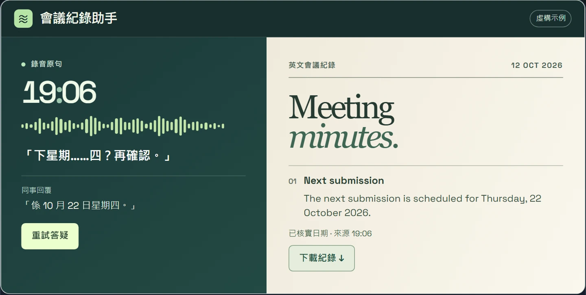

← 全部作品／ 工作流程




交付成果5+ 小時 → 約 90 分鐘
ENGINEERING NOTES
我怎樣做
設計部採用。以一場 90 分鐘的會議計，約 70 分鐘用於本機轉錄，人手答疑約 10 分鐘。
整理錄音
FFmpeg 處理音訊，本機 ASR 配合專案熱詞轉錄。
核對決定
模型先列原句及時間碼。日期或進度不清時，桌面工具整理成問題包。
交付與修訂
同事回答後匯出 Word 紀錄和 Excel 議程。已核實的術語可供下次使用。
- Python
- FFmpeg
- faster-whisper
- Tkinter
INTERACTIVE
親手試用
會議紀錄助手
虛構示例
19:06
「下星期……四？再確認。」
英文會議紀錄12 OCT 2026
Meeting
minutes.
01
已核實日期 · 來源 19:06
Next submission
草稿 · 日期待確認
查看完整流程
試試讓人工確認供下次沿用
合成流程示意。按鈕只切換本頁狀態，不執行模型或修改實際知識庫。實際系統由程式保存記憶，再經確認套用。
會議紀錄個案
從散會到下次開會
散會後，同事要重聽整段錄音、整理英文紀錄，還要接手準備下次議程。我把兩次會議之間的交接畫出來，逐步釐清哪些資料可以沿用、哪些決定一定要有人確認。
工時省在哪裏？
以設計部一場 90 分鐘的粵語會議為例。以前同事聽完整場，再花約 3 小時寫稿，之後交主管覆核。
一個會議週期，四次交接
- 散會後
由錄影建立草稿
程式整理音訊和舊議程。AI 從今次錄音抽出決定，逐項附上時間碼和原句，寫成英文初稿。
交付 · 有來源的草稿 - 核稿時
只重聽有疑點的片段
例如「準備提交」和「已提交」會影響跟進。系統列出待確認項目，同事聽回相關片段，答案連來源記錄。
交付 · 已核對的紀錄 - 兩次會議之間
並行準備議程和分享
負責同事更新提交進度，另一邊由工程師準備分享材料。按各自的交件時間收集，齊備後才合併。
交接 · 進度表及分享文件 - 下次開會前
組成可派發的會議包
議程和分享資料整理成 PDF，同事核對內容及會議連結後派發。下次散會，沿用議程框架再核對新決定。
交付 · 下次會議資料
進度資料提交清單 → 議程 PDF
負責同事先更新提交清單。收到最新進度後，整理者把資料併入 Excel 議程，核對未完成的項目，再準備會議用 PDF。
分享資料工程師簡報 → 分享 PDF
工程師提供簡報或 PDF。簡報需轉檔，然後按當次分享內容合併、核對頁次，另存一份分享文件。
會議資料包議程 PDF ＋ 分享 PDF ＋ 會議連結
我把日常操作包成 Python／Tkinter 桌面工具。同事可以在視窗內執行流程、預覽並複製電郵草稿，再自行核對及發出。
工程取捨
一句說話，如何落筆
舊議程提供欄位，今次錄音提供證據。即使只差「準備」兩個字，也會改變跟進工作。
- 程式固定格式
- Python 按議程建立骨架，用 FFmpeg 整理錄音，再交 faster-whisper 本機轉錄。重複的欄位和匯出格式可逐次重用，減少模型處理量。
- 模型整理語意
- 先抽出每項決定、時間碼、原句和把握程度，再寫英文點列。沒有本次來源的舊進度留在正文以外。
- 人處理疑點
- 遇到日期不清或轉錄結果不一致，程式把相關片段整理成問題包。確認過的答案有來源記錄，術語校正可供下次辨識沿用。